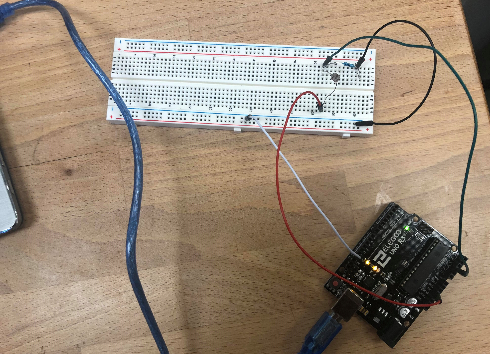
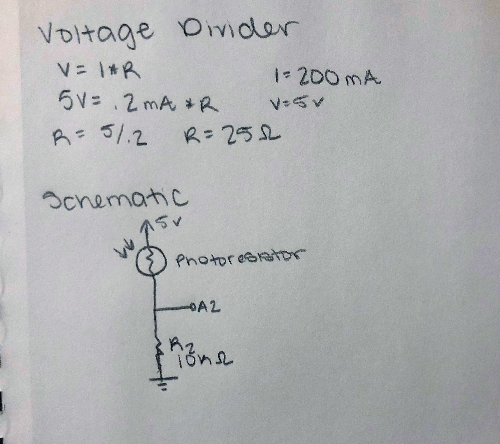
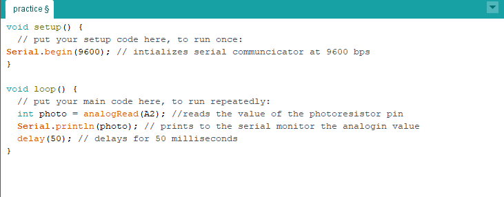
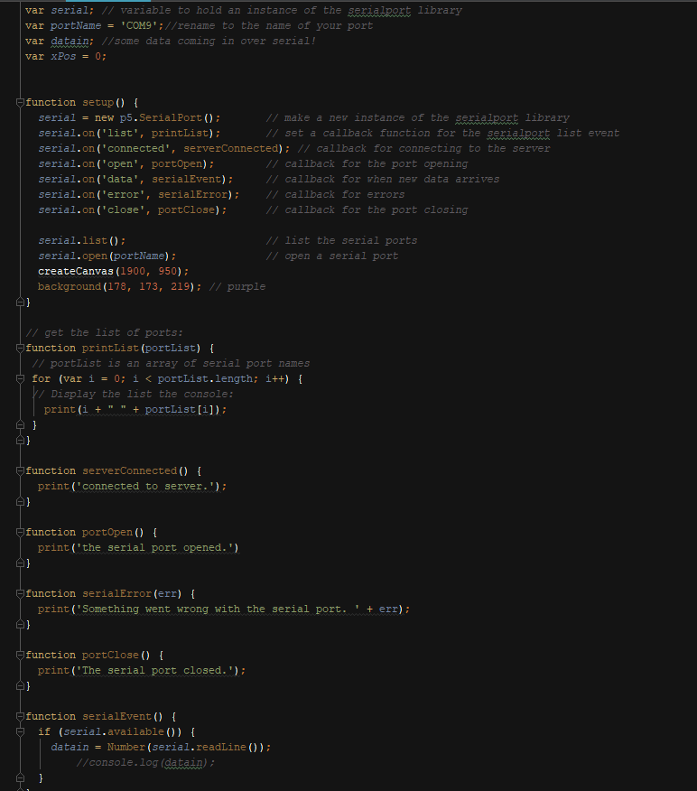
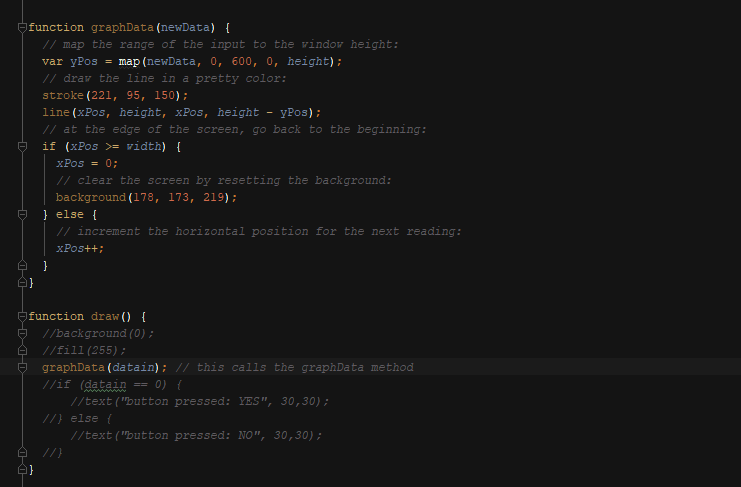
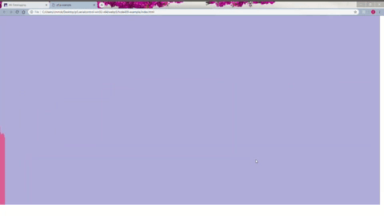

Courtney McKee's Assignment 6!
Here is all the documentation for assignment 6 which inlcudes the circuit board, schematic, a code snippet, and the circuit operation!!
Circuit

This is the circuit. The photoresistor is connected to pin A2.
Schematic

This is the schematic for the circuit and the calculation for the resisitor. I used a 10K resistor for R2 because it could be anything over 25 ohms . I also used a 10k resistor to insure that there will not be a short and it limits the current. .
Code Snippet
  
This is the code that is making the website interactive with the ardunio. On the left is the code(firmware) used for the ardunio and on the right is code for the p5.js. For the map function in the graphData I chose 600 as the value based on the values being read from analog pin A2. The analogRead values I was reading ranged from around 300 to 600.
Cicuit Operation


On the left is the interactive page and on the right is me moving my finger over the photoresistor and how it changes the page. The videos were taken at the same time to show how they interact with each other.
I tried my best to get the videos to match as close as possible.